Code
import matplotlib.pyplot as plt
import numpy as np
x = np.linspace(0, 10, 100)
y = np.sin(x)
plt.figure(figsize=(10, 6))
plt.plot(x, y)
plt.show()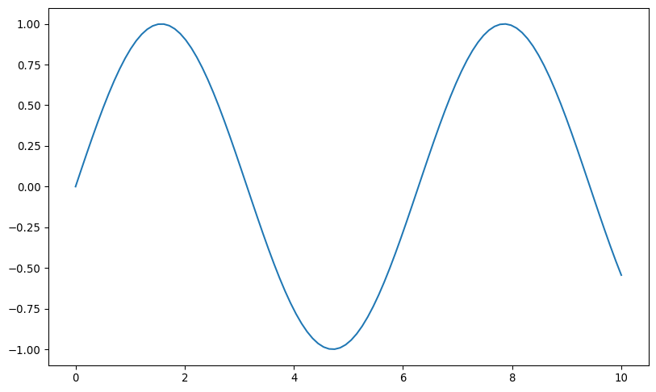
import matplotlib.pyplot as plt
import numpy as np
x = np.linspace(0, 10, 100)
y = np.sin(x)
plt.figure(figsize=(10, 6))
plt.plot(x, y)
plt.show()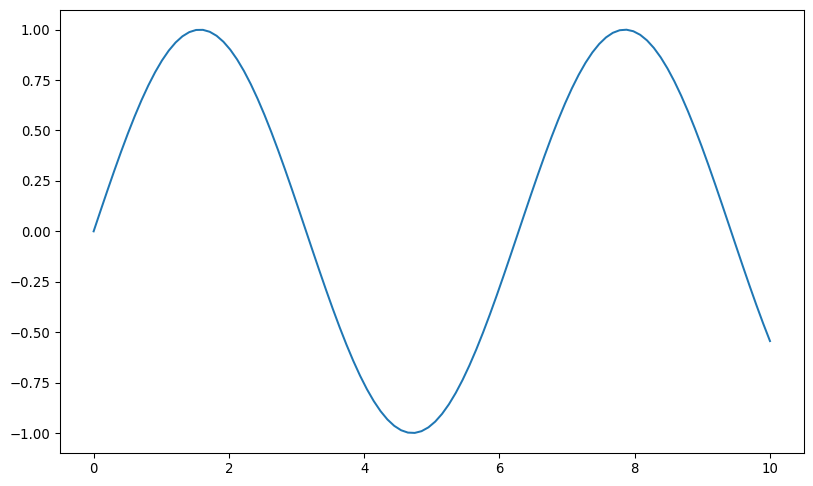
plt.figure(figsize=(10, 6))
plt.plot(x, y, color='red', linestyle='--', linewidth=2, marker='o', markersize=5)
plt.title('Customized Line Plot', fontsize=16)
plt.xlabel('X-axis', fontsize=12)
plt.ylabel('Y-axis', fontsize=12)
plt.grid(True, linestyle=':')
plt.show()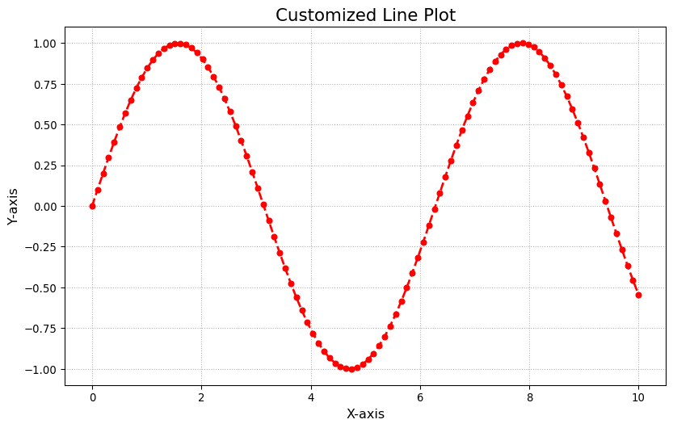
plt.figure(figsize=(10, 6))
plt.plot(x, y)
plt.xlim(0, 5)
plt.ylim(-1.5, 1.5)
plt.xticks(np.arange(0, 6, 1))
plt.yticks(np.arange(-1.5, 1.6, 0.5))
plt.show()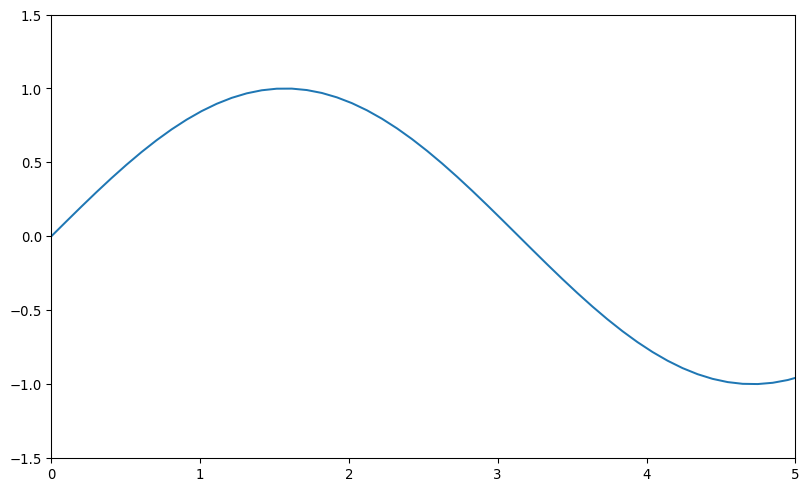
plt.figure(figsize=(10, 6))
plt.plot(x, np.sin(x), label='sin(x)')
plt.plot(x, np.cos(x), label='cos(x)')
plt.legend(fontsize=12, loc='upper right')
plt.show()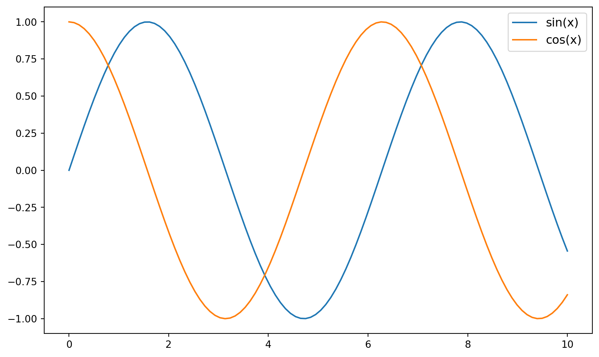
plt.figure(figsize=(10, 6))
plt.plot(x, y)
plt.title('Sine Wave', fontsize=16, fontweight='bold')
plt.text(5, 0.5, 'Peak', fontsize=14, color='red')
plt.annotate('Trough', xy=(3*np.pi/2, -1), xytext=(6, -0.5),
arrowprops=dict(facecolor='black', shrink=0.05))
plt.show()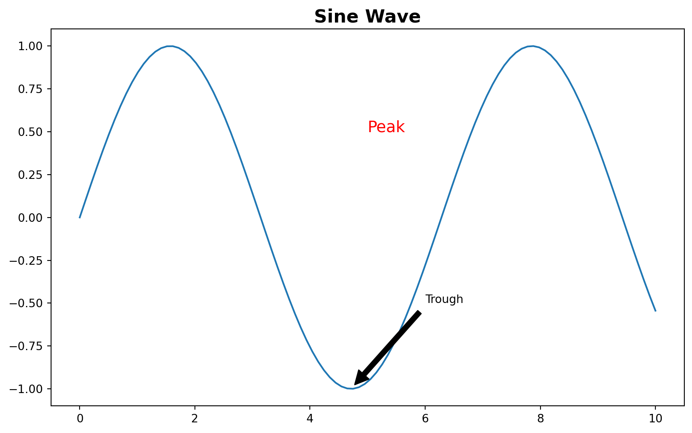
import seaborn as sns
import pandas as pd
sns.set_style("whitegrid")
sns.set_palette("deep")# Load the tips dataset
tips = sns.load_dataset("tips")
# Display the first few rows and data types
print(tips.head())
print("\nData Types:")
print(tips.dtypes)
# Select only numeric columns for correlation
numeric_columns = tips.select_dtypes(include=[np.number]).columns
tips_numeric = tips[numeric_columns] total_bill tip sex smoker day time size
0 16.99 1.01 Female No Sun Dinner 2
1 10.34 1.66 Male No Sun Dinner 3
2 21.01 3.50 Male No Sun Dinner 3
3 23.68 3.31 Male No Sun Dinner 2
4 24.59 3.61 Female No Sun Dinner 4
Data Types:
total_bill float64
tip float64
sex category
smoker category
day category
time category
size int64
dtype: objectplt.figure(figsize=(10, 6))
sns.scatterplot(data=tips, x="total_bill", y="tip", hue="time", size="size")
plt.title("Tips vs Total Bill", fontsize=16)
plt.show()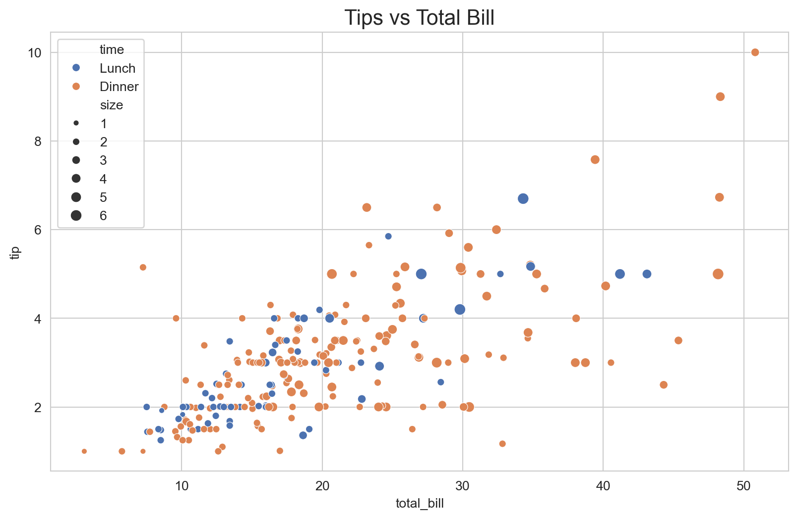
plt.figure(figsize=(10, 6))
sns.boxplot(data=tips, x="day", y="total_bill", palette="Set3")
plt.title("Total Bill by Day", fontsize=16)
plt.show()/var/folders/bs/x9tn9jz91cv6hb3q6p4djbmw0000gn/T/ipykernel_29555/2996973332.py:2: FutureWarning:
Passing `palette` without assigning `hue` is deprecated and will be removed in v0.14.0. Assign the `x` variable to `hue` and set `legend=False` for the same effect.
sns.boxplot(data=tips, x="day", y="total_bill", palette="Set3")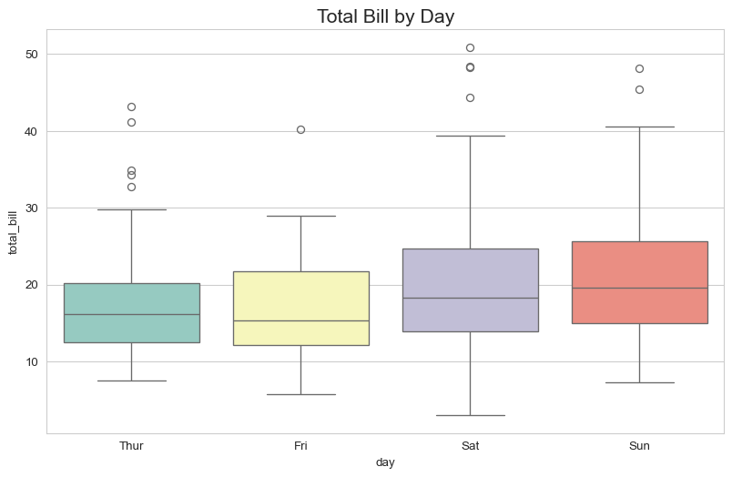
corr = tips_numeric.corr()
plt.figure(figsize=(8, 6))
sns.heatmap(corr, annot=True, cmap="coolwarm", linewidths=0.5)
plt.title("Correlation Heatmap of Numeric Columns", fontsize=16)
plt.show()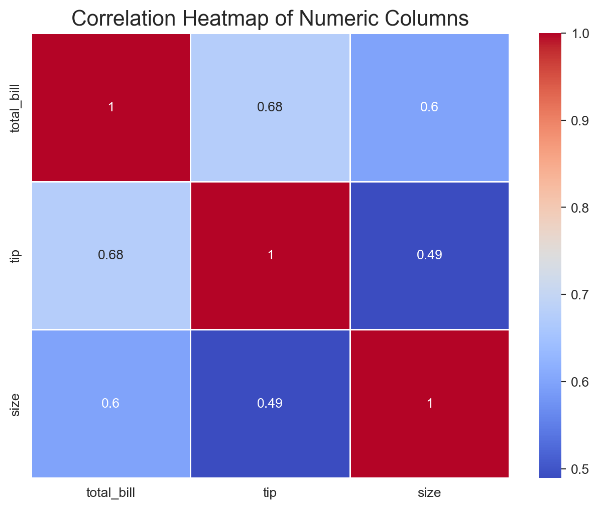
sns.pairplot(tips, hue="time", palette="husl", height=2.5,
vars=["total_bill", "tip", "size"])
plt.suptitle("Pair Plot of Tips Dataset", y=1.02, fontsize=16)
plt.show()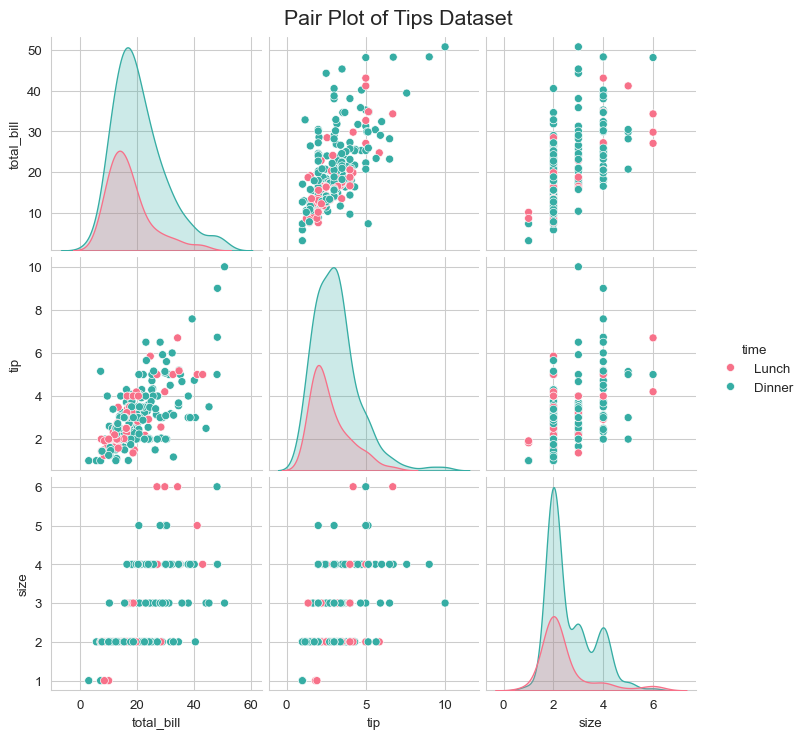
plt.figure(figsize=(10, 6))
sns.regplot(data=tips, x="total_bill", y="tip", scatter_kws={"color": "blue"}, line_kws={"color": "red"})
plt.title("Regression Plot: Tip vs Total Bill", fontsize=16)
plt.show()
plt.figure(figsize=(12, 6))
sns.catplot(data=tips, x="day", y="total_bill", hue="sex", kind="violin", split=True)
plt.title("Distribution of Total Bill by Day and Sex", fontsize=16)
plt.show()<Figure size 1152x576 with 0 Axes>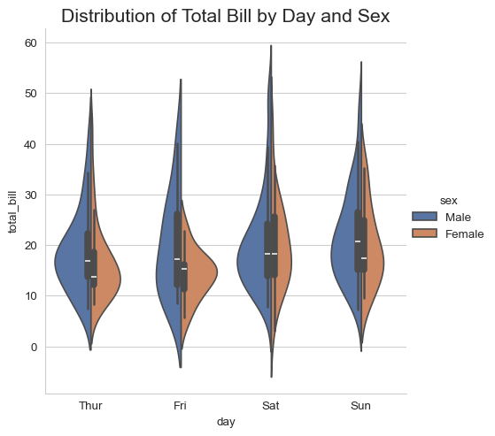
Remember, you can always combine Matplotlib and Seaborn customizations for even more control over your visualizations!